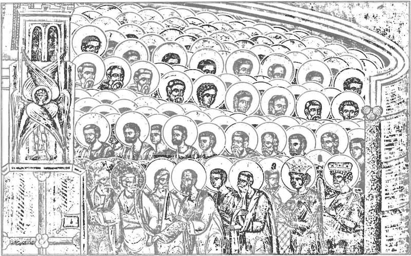

Monahismul de tip Apusean a denaturat învățătura Bisericii. Învățătura Părinților Bisericii că drumul spre îndumnezeire se deosebește în făptuire și contemplare este de bază. Făptuirea înseamnă lupta pentru curățirea inimii, iar contemplarea este rugăciunea minții și vederea lui Dumnezeu, a luminii necreate. Făptuirea trebuie să se încheie prin contemplare, în cazul în care contemplarea este urcușul făptuirii, însă niciodată pe durata contemplării nu este părăsită făptuirea. Sfîntul Apostol Pavel a văzut pe Hristos cel Înviat pe drumul Damascului și după aceea s-a botezat. Sfîntul Simeon Noul Teolog a văzut pe Dumnezeu înainte de tunderea sa în monahism și chiar înainte de a intra în obștea monahală.
În monahismul de tip Apusean, așa cum a fost exprimat în Evul Mediu și trăiește de către unii monahi contemporani, se face o deosebire între viața practică și cea contemplativă în care una este la antipodul celeilalte. Această deosebire constituie în realitate o erezie. Cel mai rău este că monahii Apuseni au schimbat și conținutul acestor termeni. Pentru aceștia viața practică înseamnă misionarismul la celelalte popoare sau administrația în spațiul vieții bisericești. Astfel, toți clericii din Occident provin din sectorul acestei așa-zise vieți practice. De asemenea, viața contemplativă înseamnă o contemplare teoretică, o meditație contemplativă. Așadar, Apusenii identifică rugăciunea cu o legătură meditativă cugetătoare la Dumnezeu. Această meditație spirituală nu are nici o legătură cu predania ortodoxă, care se exprimă prin rugăciunea minții în inimă, care este îndepărtarea gîndurilor din inimă, de vreme ce pe parcursul rugăciunii există un singur gînd de unde și denumirea de rugăciune „monologică” (de un singur gînd).
Fiindcă monahismul din perspectiva ortodoxă primară a căzut într-o stare secularizată și s-a transformat într-o organizație cu alte scopuri, diferite față de scopurile inițiale ale monahismului. Așadar, monahul autentic urmărește mîntuirea sa, fiind interesat în același timp și de mîntuirea celorlalți, dar monahul secularizat de tip Occidental urmărește cînd „mîntuirea” Bisericii, cînd dominația acesteia asupra societății.1
Vîrful spiritualității unei religii îl întruchipează șefii spirituali și trăitori, numiți și „mistici”. Pentru a se desăvîrși, aceștia trăiesc în diferite comunități numite frății, confrerii sau mănăstiri. În creștinism etalonul viețuirii spirituale îl reprezintă monahismul. Dacă în ortodoxie monahismul este unitar, în catolicism el se împarte în „Ordine” și „Reguli”, fiecare cu rînduielile ei. Conform aceluiași mitropolit, șocul pe care îl are ortodoxul autentic atunci cînd se află față în față cu spiritualitatea Regulilor este mare: „Călătorind prin Occident, în anii mei de studii, am avut prilejul să cunosc multe din aceste ordine și să răspund multor întrebări în legătură cu situația de la noi. Cel mai mult m-a impresionat întîlnirea cu așa-zisele ordine contemplative, în care viețuitorii sunt claustrați pe viață, fie bărbați, fie femei. Am vorbit maicilor vizitandine din Chartres (Franța), maicilor carmelite din Assisi (Italia), călugărițelor din Valsainte (Elveția) și multor altora fie prin grile masive de fier, dublate și de perdele, e adevărat, ușor transparente, fie prin ușile închise, și am luat parte la slujbe în biserici în care nu călcase niciodată picior de mirean. Izolare totală, potrivit Regulii respective. În Belgia am vizitat o mănăstire trapistă, Rochefort, în care, în afară de stareț, am vorbit cu ceilalți prin semne (…) Nu povestesc aceste ciudățenii cu gîndul de a le critica sau a le ridiculiza. Fiecare își organizează chipul, relațiile, contactele cum vrea și-și alege stilul de viață pe care și-l dorește. Nu mă pot totuși reține să nu spun că întîlnirea cu aceste stiluri de viață m-a șocat puțin. Mi s-au părut oarecum artificiale, într-o anumită măsură chiar inumane, în sensul cel mai simplu al cuvîntului, acela al violentării libertăților minime și esențiale la care ființa umană are dreptul prin însăși existența și structura ei. Privată de ele, își mutilează existența. Pasărea e făcută să zboare. În colivie sau cu aripile tăiate nu mai este pasăre în adevăratul înțeles.”2
Monahii Apuseni, deoarece au renegat elementele de bază ale monahismului ortodox, așa cum sunt formulate în învățătura Sfinților Părinți au rămas numai la elemente exterioare, adică munca, activitatea de asistență socială, misionarismul și tot ce are legătură cu activitatea exterioară. Mentalitatea acestui monahism apusean diferă foarte mult de atmosfera și perspectiva monahismului isihast ortodox, în care se dă întîietate curățirii inimii de patimi, eliminării iubirii egoiste de sine (philautia) sau mai degrabă preschimbării ei în iubirea de Dumnezeu și iubirea de oameni, a dobîndirii Duhului Sfînt, prin care se transformă toată lumea lăuntrică pieritoare. Monahii ortodocși fac eforturi să trăiască slava lui Dumnezeu prin curățire, iluminare și îndumnezeire și nu prin activitate, muncă și bogăție3.
Întrucît Dumnezeu a fost înlocuit cu omul în catolicism toate idealurile sunt pămîntești. De aici începe tragedia catolicismului, obligat să înlocuiască lucrarea harului pierdut prin căderea de la Biserica Apostolică cu surogate și idealuri umane, cuprinse în „Reguli” golite de renaștere duhovnicească. „Regulile” exprimă cel mai fidel realitatea depărtării catolicismului de Adevăr, refugierea în tipare și categorii tehnice care încorsetează viețuirea duhovnicească autentică. Atitudine ce deosebește esențial monahismul Apusean — din care își trag seva misticii catolici — de monahismul ortodox al Părinților Bisericii.
Mitropolitul Antonie al Ardealului observă că, spre deosebire de mistica Apuseană, în Ortodoxie se remarcă un refuz net al instituționalizării vieții duhovnicești. Părinții ortodocși refuză să se considere membri ai unui trust al rugăciunii, unde viețuirea creștină poate fi monitorizată rațional, statistic, contabilicește. El povestește că pe cînd se afla în Occident i s-a pus întrebarea: „Monahismul vostru e contemplativ sau activ?” Pentru ortodocși o asemenea întrebare este cu totul nepotrivită, ridicolă, chiar jenantă, dovedind lipsă de maturitate. În ortodoxie asemenea întrebări nu se pun. Ne plasează oare rugăciunea și acțiunea în spații exclusive, în cer cea dintîi și pe pămînt cealaltă? Este vorba aici de un divorț care o opune pe una alteia? Cei care gîndesc în termeni exclusivi sau disjunctivi sunt ei oare pe calea cea bună? Au oare dreptate cei care gîndesc că noi ortodocșii cerem de la toți numai rugăciune? Și dacă nu, cum se pot împăca cele două? Care sunt datele tradiției ortodoxe? Ne cere ea să alegem între rugăciune și acțiune?
A defini monahismul ortodox ca fiind contemplativ sau activ este impropriu. Cum ar putea separa creștinul ortodox contemplația de viețuirea practică împărțindu-le în categorii distincte, părut antagonice, de vreme ce ele ființează împreună?! Ca atare, răspunsul mitropolitului a fost pe măsură: „Da” și „nu” în același timp”4.
Pentru ortodocși „a face” nu are un sens limitat exclusiv la fapta văzută. „A fi” și „a face” sunt intim legate, una existînd prin cealaltă. În catolicism „a face” presupune acțiunea independentă de „a fi”. Misticul catolic desparte juridic aceste realități în concepte distincte, delimitate raționalist, interpretîndu-le antagonic. EI crede că acestea pot fi „practicate” separat, după un cod de exerciții și „reguli” speciale pentru fiecare în parte. Ca atare el poate opta să se „desăvîrșească”, consacrîndu-se exclusiv numai pentru „a fi” sau numai pentru „a face. De aici și disprețul pentru cei ce viețuiesc „activ” în Biserică — post, ascultare, osteneală, prezență la slujbe etc. — considerați „inferiori” „contemplativilor”, care nu mai au nevoie de rînduielile obișnuite, zilnice, socotite „comune”, poțrivite „începătorilor”. Sfinții Părinți identifică în aceste stări sufletești mîndria și părerea de sine. Deși monahii ortodocși au avut din totdeauna rugăciunea inimii la mare cinste, ei n-au asimilat-o ca metodă decît în anumite epoci. Pe de altă parte, ei nu au separat niciodată rugăciunea de acțiune. Printr-o smerenie adîncă, n-au încercat să abordeze rugăciunea și contemplația prin ele însele, evitînd a se lansa într-o întreprindere atît de îndrăzneață ca aceea la care îi invita Sfîntul Paisie Velicicovski. Accentele paisiene au lăsat urme. Ele mai pot fi recunoscute și în zilele noastre ici și colo, dar sunt apanajul unor experiențe individuale, tainice, neorganizate și nici generalizate mai ales acolo unde în obști există și posibilități de idioritmie. Majoritatea monahilor au continuat după Paisie, așa cum se practica și înainte, să pună accentul pe asceză, pe ascultare, pe sărăcie, pe slujirea altora; înainte de toate, pe smerenie și pe rugăciunea smerită, așadar, ceea ce se numește „viață activă”. Aceasta a fost o cale normală, realistă, conștientă că angajarea pe ea presupune toată viața și că puterile omului sunt limitate și nu trebuie solicitate din primul moment.
Se scrie în Viețile Sfinților că adesea se vizitau — de obicei tinerii îi vizitau pe cei mai bătrîni — și-și cereau „un cuvînt”, un cuvînt esențial. „Avvo, spune-mi un cuvînt” și cuvîntul pe care-l primeau ca răspuns avea pentru dînșii aceeași valoare ca și cuvîntul pe care li l-ar fi spus un înviat din morți. Pe vremea aceea „cuvîntul” întărea mult! Era ca venind de la Dumnezeu. În tradiția duhovnicească ortodoxă cuvîntul este destinat întotdeauna să se întrupeze. Dacă Iisus-Cuvîntul s-a făcut trup, cuvîntul pronunțat trebuie de asemenea să se întrupeze, să se transforme în acțiune; altfel este zadarnic. „Dacă ești un om care iubește învățătura, spune Sfintul Marcu Ascetul, fă-te iubitor și de osteneală, căci simpla cunoștință îngîmfă.'5
Catolicii înțeleg prin contemplativ, în același timp, prea mult și prea puțin. În general, în spiritualitatea catolică, se numesc contemplative, în sens strict, ordinele monahale care nu fac misiune, adică acelea care duc o viață claustrată, nu se ocupă nici de învățămînt, nici de activități pastorale. Adică, dacă monahul alege să viețuiască în sărăcie, execută la un timp fix, zilnic, un set de reguli ascetice, nu iese din mănăstire, nu vorbește cu oameni, se cheamă că e un „contemplativ, că trăiește „mistic”. Elemente niciodată suficiente în ortodoxie pentru ca cineva să se numească contemplativ. Întrebat, nimeni în ortodoxie nu va spune că are vreo contingență cu contemplația. Mitropolitul Antonie spune că a răspuns în felul acesta multor Occidentali la colocvii și în întîlniri la mănăstirile lor, rămînind toți uluiți. Ei credeau că ortodocșii sunt toți, măcar în secret, contemplativi. Că doar ei, Occidentalii, au destule ordine, ordine întregi de monahi contemplativi și maici contemplative! Pentru ortodocși contemplația e ceva foarte înalt, e un dar care se dă unora, poate, din cînd în cînd. Și cînd li se dă nu vorbesc de el. Preocuparea lor zilnică e asceza, respectarea voturilor, smerenia, răbdarea, postul, lectura cărților sfinte, somnul cu întreruperi pentru rugăciune, rugăciunea în biserică și rugăciunea personală, acestea angajînd și sufletul. Fără parcurgerea acestui itinerariu nu poate exista contemplație. Dacă în catolicism contemplația și viața activă se exclud reciproc, în ortodoxie nu este așa. Între viața activă și cea contemplativă, cînd aceasta din urmă se realizează, nu există și nici nu trebuie să existe con-tradicții. Nu sunt drumuri care ar duce la destinații diferite, de aceea nu pot fi unul mai adevărat decît celălalt. Și, în fapt, ambele încep cu viața activă, cu îndeplinirea poruncilor, ceea ce în fapt egalează pe monahi mirenilor ortodocși practicanți, căci pentru toți creștinii sunt valabile aceleași porunci. „Începutul și rădăcina a toată lucrarea este viețuirea potrivit cu poruncile mîntuitoare”, spun sfinții Calist și Ignatie Xantopoulos.6 Fără curățirea ascetică ochiul sufletului rămîne orb, iar aceasta presupune eforturile corpului. Dacă în mistica romano-catolică contemplația e înțeleasă ca rezultat al voinței umane și al progresului dobîndit în urma exercițiilor ascetice repetate timp îndelungat, în ortodoxie nevoitorul știe că aceasta nu este un atribut al întreprinderii omului.
Vine pe calea ascezei, dar nu din cauza ei, cum gîndesc misticii catolici. Cînd se forțează nota, apar iluziile și erezia, vedeniile corporale, urmări ale sugestiei psihice stimulate de duhuri. Sfinții Părinți resping toate viziunile corporale, acuzînd pe cei ce le acceptă de mesalianism, erezie care învăța că Dumnezeu poate fi văzut sensibil. Linie împărtășită de întreaga tradiție ortodoxă. Spiritualitatea ortodoxă se opune atît gnozei intelectualiste, cît și percepției sensibile a naturii divine, ambele împărtășite de misticii catolici. Pe calea îndumnezeirii, omul întreg se găsește angajat, fără să ajungă, totuși, la esența lui Dumnezeu. În lumina celor de mai sus, este dincolo de orice discuție că cineva ar putea ajunge la „participare”, la „lumina necreată” a dumnezeirii prin vreo tehnică, prin vreo metodă! Metoda poate fi ușor bănuită de un automatism care nu are nimic spiritual în ea, ceea ce se înțelege de la sine. Ortodocși au afirmat întotdeauna că Varlaam de Calabria, în disputa sa cu Sfîntul Grigorie Palama, n-a înțeles nimic din isihasm, pentru că l-a privit numai ca pe o „metodă” și a absolutizat texte care nu sunt neapărat normative.
În conștiința și în practica vieții duhovnicești din Răsăritul ortodox nu se face simțită nici o contradicție și calea activă nu se delimitează strict de cea contemplativă. Evident, nu se poate ajunge la starea în care predomină contemplația fără multă osteneală activă în vederea curățirii de patimi, dar cu osteneala se poate rămîne și numai la etapa luptei, fără să se ajungă la contemplație. Etapa luptei nu e însă mai prejos de contemplație și nu înseamnă că cineva de pe cale nu e realizat, așa cum se crede în catolicism. Sfinții cei mari s-au crezut toată viața lor pe cale și nu la sfîșit, cum pare unora contemplația. Fiecare treaptă e cu lupta și realizarea ei. Nimeni nu-și face scrupule de conștiință fiindcă nu ajunge la țelul cel mare pe care îl recomandă, de pildă, Sfîntul Grigorie Sinaitul, care îndeamnă la perseverență cu orice preț. Mîntuirea pe calea monahală trebuie să fie senină, simplă, nu crispată și complexată.
În sens tehnic romano-catolic, ortodocșii sunt, poate, contemplativi, dar în cazul acesta se spune prea puțin. Sfîntul Serafim de Sarov este considerat ca un model de contemplativ, dar dacă atribuim cuvîntului același sens și îl aplicăm întregului monahism ortodox, de data aceasta spunem prea mult. Nu toți monahii ortodocși sunt Serafimi de Sarov! Cum ar putea fi contemplativi monahii ortodocși doar pentru că se conformează unor norme de viețuire asemănătoare ori chiar „identice”, din punct de vedere formal, Sfîntului Serafim? Există fără îndoială contemplativi, dar nu în grup. Nu există mănăstiri de contemplativi. Structura mănăstirilor ortodoxe este contemplativă, dar nu claustrată în sens Occidental. Nu este însă nici activă în sens Occidental. Călugării, cu rare excepții, stau în mănăstire, nu au funcții în afară. Din acest punct de vedere, formal, întrunesc condițiile de „contemplativi”. Lumea vine la mănăstire, nu călugării merg spre lume. Care vin la mănăstire sunt de obicei oameni evlavioși care vin să se roage și să vadă un exemplu bun. E drept că încep și ortodocșii să plătească tribut modernismului: mănăstirile sunt năpădite de turiști, dar se face o netă deosebire între turist și credinciosul care vine pentru rugăciune.7 Amănunte care în ochii Apuseanului indică un monahism „activ”, departe de perspectivele unei spiritualități „înalte”, „contemplative”.
Dacă s-ar zice în ortodoxie că cineva aparține unei mănăstiri de contemplativi, aceasta ar fi un semn că s-a uitat de smerenie și că s-au pervertit sensurile cuvintelor, indicînd dereglări psihice. Deși monahii ortodocși refuză să fie catalogați exhaustiv drept „contemplativi”, ei nu refuză idealul înalt al contemplației. Dacă ei refuză această reducere a jumătatea contemplativă a vieții duhovnicești, ei refuză, de asemenea, și numele de activi, pentru aceleași rațiuni. Asceza și contemplația sunt corpul și sufletul aceluiași organism. A accepta clasificarea ar putea antrena un dezechilibru și teoretic și practic. Clasificarea e bună în manuale. Părinții ortodocși, și cei din trecut și cei de astăzi, refuzîndu-se a fi catalogați drept contemplativi, spre deosebire de misticii romano-catolici, au evitat și evită mereu un fel de triumfalism al sfințeniei, care este mult mai periculos în viața personală, ca și în viața decît celălalt triumfalism, cel clerical sau juridic. Se spune întotdeauna cu dreptate că adevăratul sfînt este acela care se ignoră.8
Antonie Plămădeală, Mitropolitul Ardealului, sintetizează foarte bine deosebirea dintre mistica ortodoxă și cea Apuseană, respectiv romano-catolică: „Acolo unde Occidentali presupuneau a fi lipsă de sens și chiar o anumită vulgaritate în spiritualitatea ortodoxă (de pildă fixarea privirii într-un loc precis în timpul rugăciunii neîncetate) ortodocșii relevau sensuri și subțirimi de care Occidentalii îi crezuseră incapabili, iar acolo unde ei, Occidentalii, vedeau sensuri ascunse, semne și căi ale sfințeniei, ortodocșii descopereau că e vorba de lucruri comune (obișnuite, firești, n. n.), de naivități și de o totală răstălmăcire a vieții ortodoxe. De pildă, la un Colocviu la Mănăstirea Orval din Belgia, după o conferință despre rugăciune, în care s-a explicat istoric, după texte clasice, cum se face rugăciunea isihastă, o călugăriță catolică a întrebat foarte serios dacă e posibil ca și ea după un an de recitare a acestei rugăciuni, numărată cu boabe de metanii — de care își făcuse rost — să ajungă sfîntă și să vorbească cu Dumnezeu (…). I s-a răspuns că se poate și după o zi, dar că e posibil, de asemenea, ca și după zece ani să nu ajungă nicăieri pentru că problema nu-și are rezolvarea nici în numărarea rugăciunilor cu boabele de metanii, nici în numărul anilor și nici în altceva de genul acesta, ci în cu totul altceva, de altă natură, în contactul cu Dumnezeu prin inima bună, prin slujirea aproapelui, prin disponibilitatea totală față de alții. Rugăciunea (chiar și în aspectele ei formale, exterioare, n.n.) e doar semnul acestor disponibilități. N-a înțeles mare lucru. Ea dorea o tehnică a sfințeniei. Precisă și sigură. Chiar de ar fi fost grea, dar să fie sigură. Să știe că dacă trece de aici pînă dincolo realizează rezultatul final maxim (…) A fost foarte contrariată că nu există o astfel de „tehnică”. Mai tîrziu a căutat-o în Yoga…”9
De ceva timp „Rugăciunea lui Iisus”, numită și „isihastă”, proprie misticii și asceticii ortodoxe, exercită asupra romano-catolicilor o atracție deosebită, percepută îndeosebi în aspectele tehnice. Mitropolitul Antonie povestește că în întîlnirile cu Occidentalii i-a întrebat adesea de ce în Apus există atîta interes pentru „tehnica” rugăciunii? I s-a răspuns că, printre altele, comuniunea cu Dumnezeu prin intermediul „Regulii” a dus la criză și chiar la un eșec. Așa că cei mai mulți cred a găsi un substitut pentru „Reguli” în isifeste, și anume pentru că acesta oferă o „tehnică” a rugăciunii, a desăvîrșirii, a îndumnezeirii. Ori, a schimba „Regula” cu niște „tehnici”, oricare ar fi ele, e a schimba răul cu mai rău. Cine dorește să practice „Rugăciunea lui Iisus” ca exercițiu, ca pe o tehnică nu va ajunge la nimic. Isihasmul îi va rămîne completamente străin pentru că tot ceea ce este vizibil în isihasm (metodă, tehnică) nu este isihasm. Deci, cînd vorbim de metodă spunem de fapt ceea ce nu este isihasmul. Nu există o metodă ca formulă exactă, care, aplicată azi, duce mîine la Dumnezeu sau la fericire, la contemplație. Prin isihasm se înțelege rugăciunea neîncetată, care conduce sufletul către isihie, către liniștire. De aici vine termenul isihasm. În literatura de specialitate termenul revine cu insistență, acoperind sensuri de la cele mai simple pînă la cele mai sofisticate. Ea poate însemna pace a gîndurilor, adunare a gîndurilor, ieșire din zgomotul lumii, ieșire din probleme, dar și realizarea stării de apatie, de nepătimire, de imunitate față de păcate și de o astfel de reculegere încît să nu mai încapă în spațiul preocupărilor celui ce s-a „liniștit” decît Dumnezeu10. Nuanțe ce scapă mentalității unilaterale catolice, autosuficientă, simplistă, reducționistă pînă la desființarea oricăror criterii ce nu rezistă criticii raționale.
Iată de ce există „specialiști” ai rugăciunii care nu știu nimic despre rugăciune. Omul este o persoană. El este în relație cu Dumnezeu ca persoană, este în dialog cu Dînsul prin dragoste, prin pocăință, prin slujirea altora. Acestea sunt datele reale ale „tehnicii” rugăciunii. Tehnica e tehnică nu dialog. Ea este monolog și orgoliu. În ortodoxie rugăciunea nu s-a făcut niciodată din curiozitate, din aviditate de cunoaștere, cu scop de sfințenie, ci s-a făcut pentru ea însăși, din rațiuni interioare, eliberată de orice orgoliu și tentativă omenească de urcuș prin propriile puteri, în sens pelagian. La ortodocși rugăciunea nu este supusă analizelor de metodă sau de școală și monahii nu cred că ei formează o asociație de rugători, în sensul exclusiv și tehnic al cuvîntului, aplicat literal în mistica romano-catolică, O oarecare discreție apără puritatea și autenticitatea rugăciunii, ca legătură de taină cu Dumnezeu, ce scapă cu totul evaluărilor croite după tipare omenești. Toți călugării ortodocși spun rugăciunea lui Iisus fără pretenții în chip natural, după starea duhovnicească a fiecăruia. Cel mai adesea ei o rostesc plimbîndu-se, lucrînd, în biserică, la masă și chiar atunci cînd sunt în discuție cu cineva. Nu le place să fie considerați extraordinari și nici rugăciunea lor să fie considerată ca ceva extraordinar și că ar duce către scopuri extraordinare. Dacă întrebi pe un monah ortodox dacă are rugăciunea, te va privi surprins și va răspunde: „nu”, pentru că el își va imagina că este interogat asupra „rugăciunii curate”, fără gînduri, despre care nu se vorbește decît foarte rar, și nimeni nu se laudă că o are. Dimpotrivă, dacă cineva este întrebat dacă spune „Doamne Iisuse, răspunde „da”, dar aceasta vrea să zică că el nu-și face decît datoria sa, își împlinește ritmul său monahal, așa cum respirația este un ritm pentru corp și nimic altceva.
Profunzimi străine spiritualității romano-catolice unde totul se interpretează rațional, instituțional, cîntărindu-se și verificîndu-se cu precizie, clasificîndu-se „valoric” conform cu standardele stabilite oficial. Așa s-a ajuns ca, spre deosebire de ortodoxie, în catolicism deosebirea dintre novice, monahul începător, și monahul sporit să se raporteze exclusiv la anii de mănăstire. Prin „începător” ortodoxia nu înțelege pe novicele în sens catolic, cel care este în perioada de pregătire. În tradiția ortodoxă cuvîntul desemnează o stare interioară permanentă. Ava Macarie Egipteanul mărturisea că nu a devenit încă monah, iar Ava Pimen a spus același lucru în conversația sa cu Ava Iosif.
Cei care, măcar în treacăt, au studiat viețile unor mistici catolici au putut observa că structura sufletului catolic corespunde mentalității seculare în care cantitatea prevalează asupra celor duhovnicești. Așa cum spunea Jacques Le Goff, în analizele sale despre Evul Mediu, „idolii oamenilor din orice stare sunt cei ce săvîrșesc vitejii, echivalent al isprăvilor sportive”id="note_11" href="#note_def_11" class="axa-note">11, trăsătură specifică ascezei Latine încă din primele veacuri, ce se impune în spiritualitatea Apuseană prin performanțe trupești, lesne accesibile firii căzute, precum stigmatele, levitația ori fenomene ce presupun manipularea sau alterarea mediului, specifice experiențelor oculte, unde întotdeauna magicul se substituie minunii. Viețile unor mistici precum Francisc de Assisi, Anton de Padova, Padre Pio, Iosif de Copertino, Tereza de Avilla, Tereza de Calcutta etc. sunt concludente.
Cuviosul Paisie Aghioritul identifică în catolicism viețuirea lipsită de prezența Duhului Sfînt, înlocuit cu rațiunea umană, fapt pentru care mistica „sfinților” catolici se reduce la „magia albă”.12 Automatismul în viețuirea spirituală catolică, înlocuirea duhului cu Regula a generat frustrare în mănăstirile Apusene culminînd cu reacții patologice, cu refugierea în atitudini extreme, fanteziste, lipsite de minime conotații religioase. Devierea catolicismului de la spiritualitatea ortodoxă s-a resimțit vizibil îndeosebi după Conciliul II Vatican din 1964, cînd, în urma instituirii aggiornamento-ului, liberalismul „spiritual” a deschis război împotriva Regulii și a oricăror forme de strictețe, socotite primejdioase pentru spiritul uman. Călugării și, îndeosebi, călugărițele, pretind să intre „în rînd cu lumea”: să nu mai fie obligatorie uniforma, să meargă la spectacole, să facă sport, să aibă acces la diferite forme de divertisment. Constatînd că: „Modernii sunt tentați să acorde purității gîndului o importanță minoră, dacă nu cumva o uită de tot”, mitropolitul Antonie al Ardealului mărturisea: „Am citit despre o călugăriță (catolică) din America care reclama dreptul de a-și face prieteni, de a merge și de a lua masa la restaurant cu un prieten și, desigur, cerea să se desființeze practica ieșirii din mănăstire cu însoțitoare. Am citit despre alta, din aceeași zonă, studentă, că e bucuroasă că, renunțind la uniformă, studenții o găsesc mai umană, că nu mai este o anonimă între celelalte maici și că acum aceiași studenți o pot deosebi de celelalte maici."13 Astfel s-au produs marile dezertări, revoltele monahale, părăsirea în bloc a unor mănăstiri în Europa și America, rigiditatea Regulilor, îngrădirile în cel mai direct înțeles al cuvîntului purtînd principala vină. Ele au șocat mentalitatea unor oameni ajunși subit la maturitate, a unor oameni ce se voiau liberi chiar și în interiorul structurilor în care intraseră din vocație de dăruire, de abandonare generoasă slujirii altora, fără gînd de profit personal și de grijă de ei înșiși.
Libertarea siluită de Reguli și-a luat drepturile ce îi fuseseră uzurpate, uzurpînd ea însăși. Rigorile stabilite matematic, tehnic, impuse fără a lua în calcul umanul, nevoile firii, nu au putut stăvili foamea duhului, căutarea vie a dumnezeirii, ridicîndu-se asupra normei. Căderi în care vedem consecințele practice ale teologiei greșite romano-catolice. Plata păcatului!
Astfel, nu e greu de înțeles de ce Sfinții Părinți au fost din totdeauna foarte reticenți cu privire le misticii Apuseni de după căderea lor din Biserică. Apare firesc îndemnul adresat de Sfîntul Teodosie de la Pecerska, Marcu al Efesului, Paisie de la Neamț fiilor duhovnicești pentru a se feri de „cei cu credință strîmbă”, context în care misticii catolici ocupă un loc de frunte. Realități de care se cuvine să ținem seama și noi cei de astăzi.
Cîți s-au gîndit că, de pildă Sfîntul Serafim de Sarov, Nicodim Aghioritul, Ignatie Briancianinov, Ioan de Kronstadt, Teofan Zăvorîtul nu s-au închinat niciodată unor mistici, cum ar fi Francisc de Assisi sau Anton de Padova? Ori că Sfîntul Ioan Iacob Hozevitul, Nicolae Velimirovici, Ioan Maximovici, Nectarie de Eghina, Iustin Popovici nu au îndreptățit nici măcar în treacăt teologia unui Toma de Aquino sau Tereza de Avilla.

1 Mitropolit Ierotei Vlachos, op. cit., p. 295-296.
2 Antonie Plămădeală, op. cit., p. 21.
3 Mitropolit Ierotei Vlachos, op. cit., p. 297, 299.
4 Ibidem, p. 280.
5 Filocalia, Ed. a II-a, vol. I, Sibiu, 1947, p. 249.
6 Ibidem, VIII, nr. 7, p. 25.
7 Antonie Plămădeală, op. cit., p. 142.
8 Ibidem, p. 281-283.
9 Ibidem, p. 252-253.
10 Ibidem, p. 252-253.
11 Dumitru Buiac, op. cit., p. 22.
12 Cuviosul Paisie Aghioritul, Cu durere și dragoste despre omul contemporan, Schitul Lacul — Sf. Munte Athos, 2003.
13 Antonie Plămădeală, op. cit., p. 138.